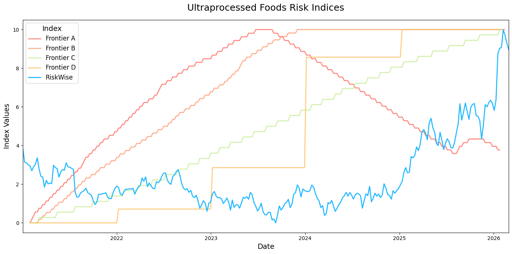
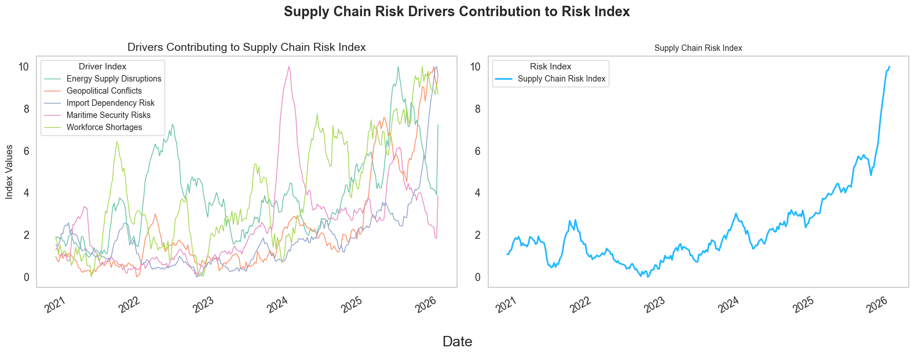

RiskWise and Frontier AI: Rethinking How Emerging Risk Is Measured
Emerging risks can disrupt industries, making real-time monitoring of trends and early identification of potential adverse events essential. Frontier AI models offer an easy, automated way to visualize risk over time. A risk index is a way to measure risk over time, providing a quantifiable way to observe how risk levels change and evolve over time. In practice, however, this quantification of risk, or risk index, is often noisy, inconsistent, and lacks meaningful variability. It is also opaque and difficult to reproduce, limiting their usefulness for decision-making.
Frontier AI models can generate risk indices quickly from text, but they were not designed to measure real-world risk dynamics. They can be unstable, sensitive to prompt phrasing, and stochastic, meaning repeated runs may produce different results for the same time period. As a result, these indices may miss granular, localized, or industry-specific shocks.
RiskWise approaches the problem differently. The RiskWise platform continuously scans global information sources, including social discourse, regulatory developments, litigation signals, and operational disruptions, to detect and quantify emerging risks across industries. It measures risk through a transparent, data-driven architecture that scales across industries and geographies. The RiskWise Indices include several key advantages:
- Transparency & Traceability: Indices are grounded in actual posts, reports, or articles, allowing users to link emerging trends with specific events.
- Stability & Consistency: A repeatable and scalable methodology produces reliable indices over time, enabling users to track how risk evolves for a given topic.
- Coverage & Granularity: RiskWise captures both macroeconomic trends and localized industry-specific shocks, leveraging large volumes of data across various channels.
Rather than generating a single index directly from text, RiskWise decomposes complex risks into underlying driver signals (e.g., regulatory pressure, labor shortages, supply chain disruptions, litigation activity). Each driver is measured independently using traceable data sources and then aggregated into a composite risk index.
Figure 1 compares risk indices generated by several frontier AI models with the RiskWise index for Ultra-Processed Foods.

The frontier model indices diverge dramatically, even when measuring the same topic over the same period. Some indices exhibit steady or periodic upward trends, while others increase and then decline. Several display periodic movements, while others remain flat for long periods before abruptly increasing. It is unlikely that these periodic movements reflect real-world events. They are likely artifacts of the LLM-based process used to generate the risk indices.
Most concerning is that different frontier models, and even the same frontier model, generate conflicting historical patterns for the same topic. Given the evolving public discussion and regulatory attention surrounding ultra-processed foods, such variability is unlikely and suggests that these indices fail to capture meaningful underlying trends.
By contrast, the RiskWise index displays more realistic historical movement and more clearly reflects emerging risk trends related to ultra-processed foods. This is because the RiskWise platform searches for relevant information on the topic and identifies significant emerging risks associated with ultra-processed foods.
Figure 2 compares frontier AI-generated risk indices with the RiskWise Index for Supply Chain-related risks.

While most frontier model indices capture the major spike in supply chain disruptions during 2022, they appear to over-index on widely cited public indicators, particularly those related to freight, logistics, and shipping (such as the New York Fed’s Global Supply Chain Pressure Index and the World Bank’s Global Supply Chain Stress Index [1]). These indicators are very important, but they represent only a portion of the risks affecting supply chain risk landscape.
More importantly, the frontier model indices show diverging trends in recent years. Some trend upward, others remain stable, and some decline. This divergence suggests that frontier models struggle to consistently capture emerging supply chain risks beyond commonly referenced indicators.
The RiskWise Index captures the 2022 supply chain disruptions without overemphasizing it and provides a broader view of recent evolving risks. In addition to capturing freight and logistics pressures, it also captures other emerging supply chain challenges, including, but not limited to, energy supply disruptions, import dependency and trade policy risks, maritime disruptions, and workforce shortages. Each of these factors represents a distinct channel through which supply chains can become strained, and together they provide a more comprehensive view of how risks emerge and evolve.
Figure 3 highlights several of the underlying drivers of risk that contribute to the RiskWise Supply Chain Risk Index. Each risk driver captures a specific dimension of supply chain risk and contributes to the overall index through a transparent and interpretable framework.

These drivers illustrate how supply chain risks rarely stem from a single cause. Instead, they arise from a combination of geopolitical developments, labor market dynamics, transportation bottlenecks, and energy market disruptions. By tracking these drivers individually, the RiskWise framework provides greater visibility into what is driving changes in overall supply chain risk.
More broadly, these examples illustrate an important limitation of Frontier AI-generated indices. While large language models can generate indices quickly from vast volumes of text, fully automated outputs do not necessarily translate into reliable signals. Without transparent methodology or clear links to underlying events, the resulting indices can be difficult to interpret, validate, or rely on for decision-making.
The challenge of emerging risk is not simply generating signals, it's measuring risk dynamics in a way that is transparent, scalable, and grounded in real-world events. Frontier AI models can summarize information effectively, but reliable risk measurement requires a structured framework that links signals to identifiable drivers of risk. By combining scalable data ingestion with transparent driver-based indices, RiskWise provides a more stable and interpretable foundation for understanding how risks evolve across industries and over time.
- Introduction: Why rely on Riskwise indices instead of Frontier model indices for risk monitoring
- Describe why it is important to monitor emerging risks
- Understand historical patterns of risks to understand how to mitigate them in the future and provide early warning system to anticipate disruptions
- Limitations of Frontier Models-Generated Indices for risk monitoring:
- Brittleness and instability in generated indices
- Suffer from limited transparency in how the index is created, while also created complications with diagnosing errors
- May capture vague historical macroeconomic patterns, but there are not specific articles of events we can ground particular spikes or trends to
- Why Riskwise indices perform better:
- Databases are updated in real-time and so are indices
- Indices are stable over time and follow repeatable methodologies
- Indices are constructed in a transparent way, making it easy to understand why certain signals are emerging and being captured
- Grounded in data sources where actual risk is mentioned. Can pinpoint exact points in time where significant risk-related events occurred
- Capture specific macroeconomic patterns and microeconomic or local shocks specific to an industry or company
- Ability to look across billions of datapoints is prohibitively expensive for frontier models
- Briefly highlight results comparing indices
- Plot both indices and illustrate how one set of indices capture historical trends better
- Demonstrate how we can tie particular trends to data sources
- Outline rest of blog
- Construct Frontier Model-Generated indices for 2 risks and 2 companies
- Construct Riskwise Indices for the same 2 risks and 2 companies
- Perform qualitatively review of how well the driver indices capture historical events and recent trends
- Describe why it is important to monitor emerging risks
- Describe Frontier Model-generated index generation process
- Briefly describe workflow used to generated indices
- Display the indices generated
- Describe what the indices are capturing based on the LLMs explanation
- Describe Riskwise index generation process
- Briefly describe riskwise index workflow. Reference previous blogs if necessary
- Display indices generated
- Describe what the indices are capturing based on the index construction and highlight specific data sources. Perhaps leverage deep research report results
- Conclusion: Recap why Riskwise indices are needed and why Frontier model-generated indices fails to capture what Riskwise indices capture
- Difference in historical trends
- Real-time updating of indices
- Grounded in actual risk-related mentions, articles, and news
- Conclude by emphasizing that clients need accurate, transparent, and timely risk signals to make confident, informed business decisions - capabilities that Riskwise indices are tailored to provide.